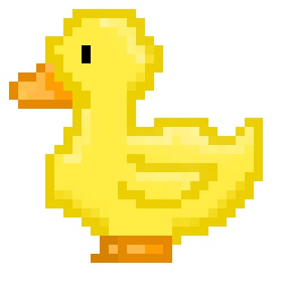

Ducks

Ducks are birds that thrive in water, characterized by their webbed feet and feathers that repel water. They can be found around ponds and rivers, where they feed on plants, insects, and tiny fish. Some species, such as mallards, are wild, while others, like Pekin ducks, are raised on farms. Female ducks build nests to lay their eggs, and ducklings are able to swim shortly after hatching. Ducks are social creatures, frequently seen in groups, and they communicate through quacking. Their lively antics make them entertaining to observe!
- Because ducks are cute :3
- They look friendly
- They inspire art and cartoon
- They're harmless